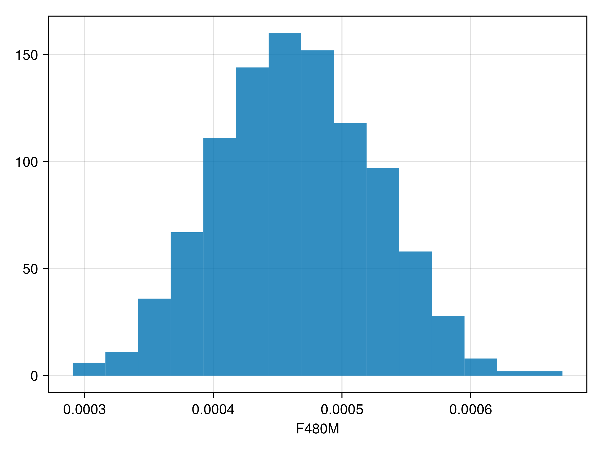
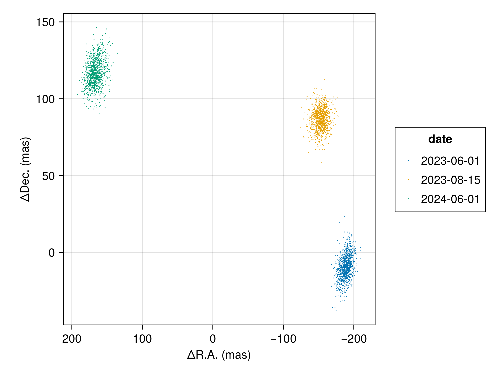
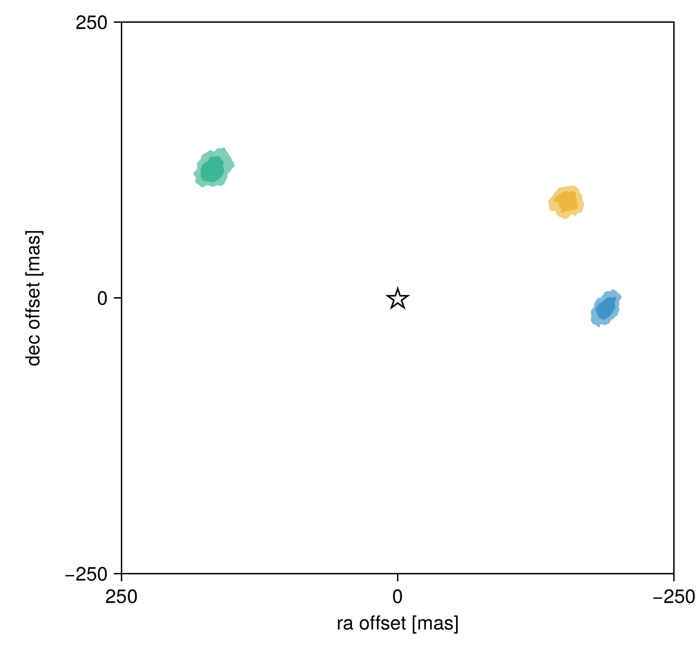

Fitting Interferometric Observables
In this tutorial, we fit a planet & orbit model to a sequence of interferometric observations. Closure phases and squared visibilities are supported.
We load the observations in OI-FITS format and model them as a point source orbiting a star.
Interferometer modelling is supported in Octofitter via the extension package OctofitterInterferometry. To install it, run pkg> add http://github.com/sefffal/Octofitter.jl:OctofitterInterferometry
using Octofitter
using OctofitterInterferometry
using Distributions
using CairoMakie
using PairPlots┌ Warning: Module Octofitter with build ID ffffffff-ffff-ffff-0000-00c64f030f6b is missing from the cache.
│ This may mean Octofitter [daf3887e-d01a-44a1-9d7e-98f15c5d69c9] does not support precompilation but is imported by a module that does.
└ @ Base loading.jl:1942Download simulated JWST AMI observations from our examples folder on GitHub:
download("https://github.com/sefffal/Octofitter.jl/raw/main/examples/AMI_data/Sim_data_2023_1_.oifits", "Sim_data_2023_1_.oifits")
download("https://github.com/sefffal/Octofitter.jl/raw/main/examples/AMI_data/Sim_data_2023_2_.oifits", "Sim_data_2023_2_.oifits")
download("https://github.com/sefffal/Octofitter.jl/raw/main/examples/AMI_data/Sim_data_2024_1_.oifits", "Sim_data_2024_1_.oifits")"Sim_data_2024_1_.oifits"Create the likelihood object:
vis_like = InterferometryLikelihood(
(; filename="Sim_data_2023_1_.oifits", epoch=mjd("2023-06-01"), band=:F480M, use_vis2=false),
(; filename="Sim_data_2023_2_.oifits", epoch=mjd("2023-08-15"), band=:F480M, use_vis2=false),
(; filename="Sim_data_2024_1_.oifits", epoch=mjd("2024-06-01"), band=:F480M, use_vis2=false),
)OctofitterInterferometry.InterferometryLikelihood Table with 12 columns and 3 rows:
epoch band use_vis2 u v ⋯
┌────────────────────────────────────────────────────────────────────────
1 │ 60096.0 F480M false [-3.46641e5, 6.7596… [-8.4391e5, -1.3675… ⋯
2 │ 60171.0 F480M false [-3.46641e5, 6.7596… [-8.4391e5, -1.3675… ⋯
3 │ 60462.0 F480M false [-3.46641e5, 6.7596… [-8.4391e5, -1.3675… ⋯@planet b Visual{KepOrbit} begin
a ~ truncated(Normal(2,0.1), lower=0)
e ~ truncated(Normal(0, 0.05),lower=0, upper=1.0)
i ~ Sine()
ω ~ UniformCircular()
Ω ~ UniformCircular()
# Our prior on the planet's photometry
# 0 +- 10% of stars brightness (assuming this is unit of data files)
F480M ~ truncated(Normal(0, 0.1),lower=0)
θ ~ UniformCircular()
tp = θ_at_epoch_to_tperi(system,b,58849) # reference epoch for θ. Choose an MJD date near your data.
end
@system Tutoria begin
M ~ truncated(Normal(1.5, 0.01), lower=0)
plx ~ truncated(Normal(100., 0.1), lower=0)
end vis_like bSystem model Tutoria
Derived:
Priors:
M Truncated(Distributions.Normal{Float64}(μ=1.5, σ=0.01); lower=0.0)
plx Truncated(Distributions.Normal{Float64}(μ=100.0, σ=0.1); lower=0.0)
Planet b
Derived:
ω, Ω, θ, tp,
Priors:
a Truncated(Distributions.Normal{Float64}(μ=2.0, σ=0.1); lower=0.0)
e Truncated(Distributions.Normal{Float64}(μ=0.0, σ=0.05); lower=0.0, upper=1.0)
i Sine()
ωy Distributions.Normal{Float64}(μ=0.0, σ=1.0)
ωx Distributions.Normal{Float64}(μ=0.0, σ=1.0)
Ωy Distributions.Normal{Float64}(μ=0.0, σ=1.0)
Ωx Distributions.Normal{Float64}(μ=0.0, σ=1.0)
F480M Truncated(Distributions.Normal{Float64}(μ=0.0, σ=0.1); lower=0.0)
θy Distributions.Normal{Float64}(μ=0.0, σ=1.0)
θx Distributions.Normal{Float64}(μ=0.0, σ=1.0)
Octofitter.UnitLengthPrior{:ωy, :ωx}: √(ωy^2+ωx^2) ~ LogNormal(log(1), 0.02)
Octofitter.UnitLengthPrior{:Ωy, :Ωx}: √(Ωy^2+Ωx^2) ~ LogNormal(log(1), 0.02)
Octofitter.UnitLengthPrior{:θy, :θx}: √(θy^2+θx^2) ~ LogNormal(log(1), 0.02)
OctofitterInterferometry.InterferometryLikelihood Table with 12 columns and 3 rows:
epoch band use_vis2 u v ⋯
┌────────────────────────────────────────────────────────────────────────
1 │ 60096.0 F480M false [-3.46641e5, 6.7596… [-8.4391e5, -1.3675… ⋯
2 │ 60171.0 F480M false [-3.46641e5, 6.7596… [-8.4391e5, -1.3675… ⋯
3 │ 60462.0 F480M false [-3.46641e5, 6.7596… [-8.4391e5, -1.3675… ⋯
Create the model object and run octofit:
model = Octofitter.LogDensityModel(Tutoria)
using Random
rng = Xoshiro(0) # Optional seeded random number generator.
results = octofit(rng, model)Chains MCMC chain (1000×29×1 Array{Float64, 3}):
Iterations = 1:1:1000
Number of chains = 1
Samples per chain = 1000
Wall duration = 19.56 seconds
Compute duration = 19.56 seconds
parameters = M, plx, b_a, b_e, b_i, b_ωy, b_ωx, b_Ωy, b_Ωx, b_F480M, b_θy, b_θx, b_ω, b_Ω, b_θ, b_tp
internals = n_steps, is_accept, acceptance_rate, hamiltonian_energy, hamiltonian_energy_error, max_hamiltonian_energy_error, tree_depth, numerical_error, step_size, nom_step_size, is_adapt, loglike, logpost, tree_depth, numerical_error
Summary Statistics
parameters mean std mcse ess_bulk ess_tail rha ⋯
Symbol Float64 Float64 Float64 Float64 Float64 Float6 ⋯
M 1.4992 0.0096 0.0003 843.7143 703.0342 1.000 ⋯
plx 99.9975 0.0954 0.0025 1450.9275 726.1297 1.001 ⋯
b_a 2.0709 0.0502 0.0038 173.6991 176.2032 1.003 ⋯
b_e 0.0334 0.0267 0.0019 170.0785 264.4287 1.019 ⋯
b_i 0.5930 0.1016 0.0067 234.9458 267.5920 1.006 ⋯
b_ωy -0.0971 0.6443 0.0456 213.7989 551.4085 1.000 ⋯
b_ωx 0.3485 0.6743 0.0501 193.7628 327.4305 1.023 ⋯
b_Ωy 0.7194 0.1744 0.0128 210.4744 327.0175 1.000 ⋯
b_Ωx 0.6483 0.1831 0.0125 214.1551 335.1745 1.001 ⋯
b_F480M 0.0005 0.0001 0.0000 648.1779 689.4622 1.002 ⋯
b_θy -0.4932 0.3710 0.0290 171.6593 196.5203 1.006 ⋯
b_θx 0.7458 0.2525 0.0192 198.0411 263.5838 1.001 ⋯
b_ω 0.6234 1.7693 0.1168 299.4689 549.1111 1.012 ⋯
b_Ω 0.7343 0.2572 0.0186 206.3625 309.8442 1.001 ⋯
b_θ 2.0330 0.8389 0.0424 252.6401 284.5858 1.008 ⋯
b_tp 58337.7360 267.0178 16.9069 293.4561 725.2862 1.002 ⋯
2 columns omitted
Quantiles
parameters 2.5% 25.0% 50.0% 75.0% 97.5%
Symbol Float64 Float64 Float64 Float64 Float64
M 1.4806 1.4924 1.4992 1.5058 1.5182
plx 99.8099 99.9321 99.9991 100.0640 100.1747
b_a 1.9721 2.0384 2.0723 2.1049 2.1695
b_e 0.0010 0.0117 0.0278 0.0489 0.0984
b_i 0.3819 0.5266 0.5927 0.6602 0.7934
b_ωy -0.9984 -0.6776 -0.1563 0.4643 0.9868
b_ωx -0.9871 -0.1915 0.6537 0.9238 1.0164
b_Ωy 0.3411 0.6260 0.7410 0.8354 0.9842
b_Ωx 0.2027 0.5483 0.6742 0.7847 0.9414
b_F480M 0.0003 0.0004 0.0005 0.0005 0.0006
b_θy -0.9998 -0.7958 -0.5616 -0.2747 0.3463
b_θx 0.0381 0.6050 0.8201 0.9466 1.0120
b_ω -2.9773 -0.5901 1.1989 1.9749 2.9275
b_Ω 0.1987 0.5805 0.7388 0.8982 1.2233
b_θ 1.0071 1.8173 2.1430 2.4649 2.9499
b_tp 57975.6978 58116.0311 58272.6744 58578.4856 58826.7498
Examine the recovered photometry posterior:
hist(results[:b_F480M][:], axis=(;xlabel="F480M"))
Determine the significance of the detection:
using Statistics
phot = results[:b_F480M][:]
snr = mean(phot)/std(phot)7.564059900770478Plot the resulting orbit:
using Plots: Plots
plotchains(results,:b, kind=:astrometry, color=:b_F480M)
Plot position at each epoch:
using PlanetOrbits
els = Octofitter.construct_elements(results,:b,:);
fig = Makie.Figure()
ax = Makie.Axis(
fig[1,1],
aspect=1,
xreversed=true,
xlabel="ΔR.A. (mas)",
ylabel="ΔDec. (mas)",
)
for epoch in vis_like.table.epoch
Makie.scatter!(
ax,
raoff.(els, epoch)[:],
decoff.(els, epoch)[:],
label=string(mjd2date(epoch)),
markersize=1.5,
)
end
Makie.Legend(fig[1,2], ax, "date")
fig
We can use PairPlots.jl to create a contour plot of positions at all three epochs:
els = Octofitter.construct_elements(results,:b,:);
fig = pairplot(
[
(;
ra=raoff.(els, epoch)[:],
dec=decoff.(els, epoch)[:],
)=>(PairPlots.Contourf(),)
for epoch in vis_like.table.epoch
]...,
bodyaxis=(;width=400,height=400),
axis=(;
ra=(;reversed=true, lims=(;low=250,high=-250,)),
dec=(;lims=(;low=-250,high=250,)),
),
labels=Dict(:ra=>"ra offset [mas]", :dec=>"dec offset [mas]"),
)
Makie.scatter!(fig.content[1], [0],[0],marker='⭐', markersize=30, color=:black)
fig
Finally we can examine the joint photometry and orbit posterior as a corner plot:
octocorner(model, results)